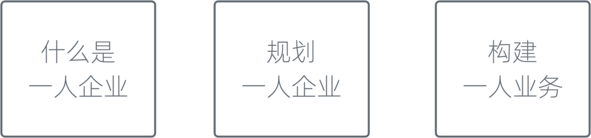
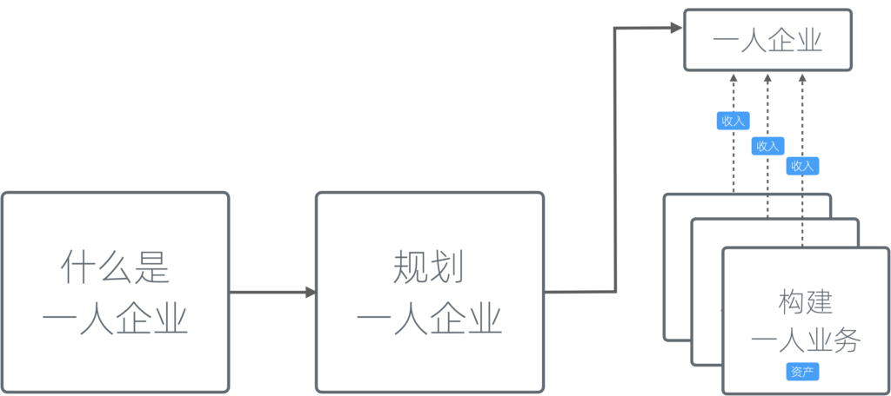
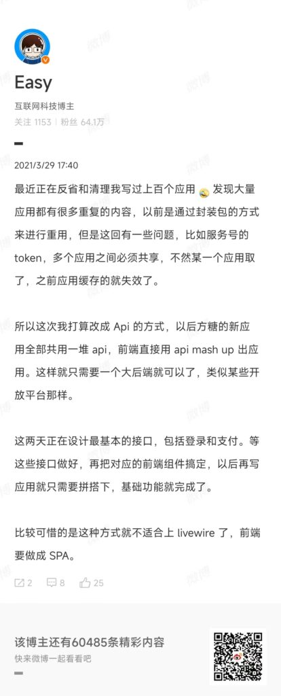
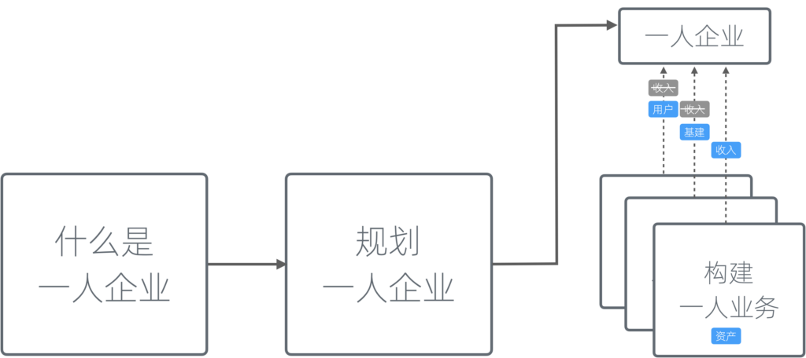
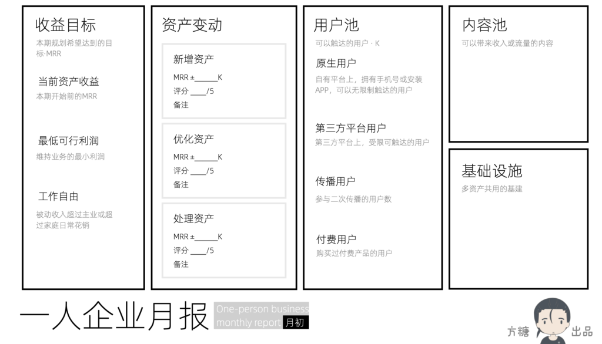
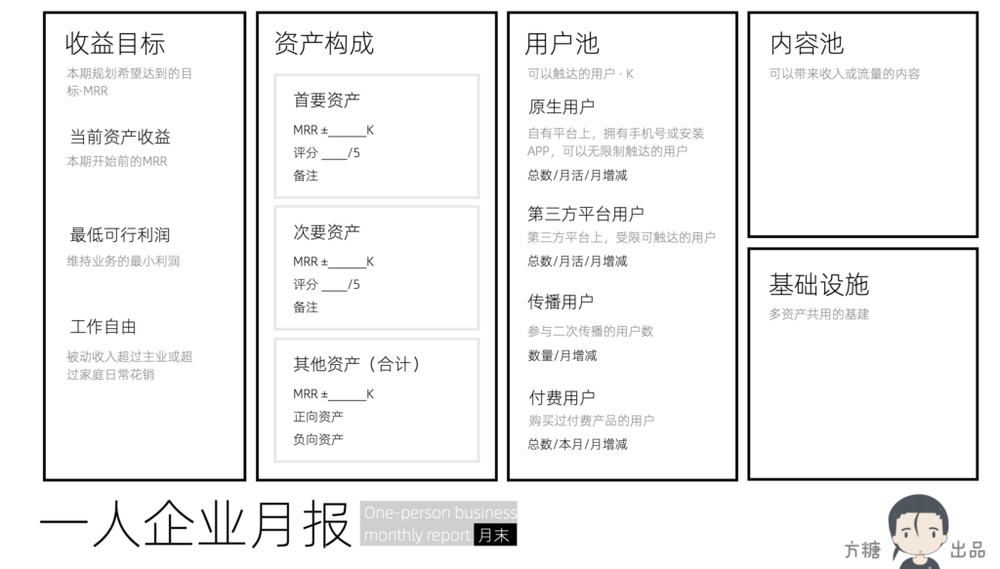

一人企业≠一人业务
本书的结构主要是三大模块：定义一人企业、规划一人企业、构建一人业务。细心的读者可能已经注意到，与前两部分相比，第三部分的标题有所不同------这并非巧合。

其实在第一个版本的方法论中，第三模块原本是构建一人企业。但在最近两年的实操迭代中，我们发现如果将一人企业和业务等同，容易陷入思维误区。
一人企业不等同一人业务
如果我们将一人企业等同于一个单一的业务，那么一旦这个业务失败。我们就只能丢掉整个企业，从头再来。这种做法在创业公司里边尤为常见，而我们原先也是未加思考地沿用了这一模式。
然而，深入思考后会发现，创业公司中项目与公司紧密绑定，很大程度上是由于股份结构和资产清算方式导致的。对于一人企业来说，所有的资产通常都是一人持有，因而不存在这类顾虑。
站在失败业务的肩上
另一方面，对一人企业来讲，业务失败是常态，经常几个月就会遇到一次。如果我们丢掉失败项目的一切重新开始，那么经常会原地踏步。相反，如果我们能把失败项目的中间成果充分利用，那么下次就能站在它们肩上前进。如此屡败屡战，终将成功。

一人企业可以有多个一人业务
这种认知上的微小差异，可能在执行时被放大，从而导致完全不同的结果。比如说，之前我一般是一个项目注册一个独立域名，使用一套独立的用户系统。这样品牌之间完全隔离，互不影响。但也导致一旦项目关闭，用户就完全丢失了。
我现在的做法是，将所有项目都放到方糖的品牌下，使用方糖的二级域名，使用方糖的统一用户系统。这样，多个业务之间的用户是共享的，对用户来说也更方便，不用总是注册。
在技术实施上，我们通过前后端分离，将网站、客户端和后端API完全分开，并将后端API改造为了一个内部开放平台。这样在上新的项目时，只需要向开放平台中添加缺少的API，然后使用独立的前端页面来调用API就好了。

统一大后端API方案
不为盈利的一人业务
进一步扩展这种思路，如果我们发现一人业务盈利的难度太大（这通常发生在一人企业的早期，由资源和经验缺乏导致），那么我们可以规划几个专门用来获取资源的一人业务，为后续的变现降低难度。

构建一人业务
在过去，我一直不理解那些蹭热点开发应用的做法。例如，当前流行什么，他们就开发什么。我们会发现，一旦这些热点不再流行，这些应用很快就销声匿迹了。
然而，如果我们从一个系统化的角度来考虑这个问题，会发现其实这种做法颇有意思。尽管蹭热点的业务似乎并不直接贡献收入，但它可以吸引用户。这些用户下载了应用程序，订阅了公众号，或加入了微信群之后，就被纳入了我们的用户池。当我们构建下一个与这个目标用户群高度重合的业务时，就能显著降低我们的客户获取成本。
因此，从系统化的思维来看，蹭热点并非毫无价值。相反，它为我们构建和扩大用户基础提供了一种有效的方法。
一人企业月报
为了更好的思考一人业务和一人企业之间如何协同优化，我们设计了「一人企业月报」。月报分为两个部分，分别适用于月初和月末。

一人企业月报-月初版本
收益目标
月初，我们会设定收益目标，同时对比当前资产的月周期性收入（MRR），我们期望达到的最低可行利润（MVPr），以及实现工作自由所需的MRR。通过比较，我们可以非常清楚地看到自己所在的位置和离目标的差距。想象一下达到下一个里程碑，我们可以获得的更自在的工作和生活状态，这会激励我们前行。
接下来是资产变动部分，即我们计划新增、优化和处理的资产，以及对这些资产的简要描述。
此外，还有三个状态模块，分别描述我们业务的当前状态，我将其视为业务的「健康度」。
用户池
其中，用户池即我们能触达的用户群体。触达的方式可以是微信推送、电子邮件或手机短信等直接方法。
我们将用户细分为「原生用户」和「第三方平台用户」。原生用户指那些在我们自己完全控制的平台上注册的用户，例如拥有我们App的用户；而第三方平台用户指在诸如微博或哔哩哔哩上关注我们账号的用户。其核心区别在于，我们推送消息时，是否受到限制或是否需要额外付费。
此外，我们还需要考虑参与二次传播和付费的用户数量，这些都是用户层的关键指标。
内容池和基础设施
内容池指的是能够带来收入或流量的内容。其中带来收入的内容实质上已经成为了资产，放到这里是为了从内容特性的统一视角去思考它。
基础设施层涉及到构建共用产品逻辑时所需的基础设施。
很多产品都在基于微信公众号来构建用户池和内容池作为基础设施。但微信公众号平台已经过了发展期，现在开始控制流量和着重变现，对传播有不小的限制。比如他们要求非公众号主题的商业推广必须走他们的广告计划。
相比之下，完全自主控制的基础设施才是最好的解决方案。
APP是自主性和触达率最好的方案。但开发APP对一人企业来说，是非常高的成本。维护也需要持续投入，光是各个应用市场的更新都要折腾挺久。另一方面，APP发版需要平台审核，对更新及时性有很大的影响。
小程序是一个折中的方案，但从2024年开始，也要进行APP备案。另外在iOS上的支付也经常被禁止。
比较下来，我们觉得对于早期的一人企业项目，使用独立网站性价比最高。不过需要将用户系统和微信整合，并利用微信的模版消息、客服消息、订阅消息来做触达。
如果要从头开发独立网站，其成本并不低。但如果通过WordPress来搭建，则仅需支付服务器的费用，一个最小的云主机实例就可以，一个月的支出在50元以内。我们正在开发一个用于支持一人企业方法论的WordPress插件，可以将WordPress和微信用户整合、文章支持推送给订阅用户、支持微信支付和XorPay接口，并可以进行产品众筹。成熟后会在本站公布，敬请期待。
有了自己的独立网站，内容和用户都可以围绕它来构建。内容首先放到自己的主站上，然后再同步到第三方平台。在同步的内容中，我们可以在自己的平台提供额外的内容，引导用户回到主站查看，从而确保核心资产和基础设施都受自己控制。
月末总结

一人企业月报-月末版本
月末时，我们会有一个对应的图表来回顾本月的工作，包括资产的现状和处理情况，以及是否达到了我们设定的目标。其中主要变动的是资产构成，已经收益目标部分。
「一人企业月报」的主要目的是让我们强制性地以全面的角度思考业务，并定期进行。确保我们不会漏掉重要的部分。